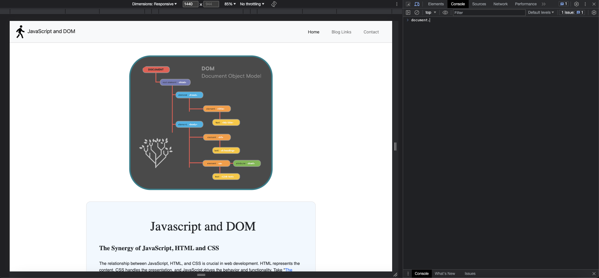
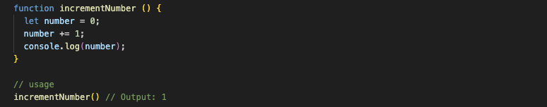

The relationship between JavaScript, HTML, and CSS is crucial in web development. HTML represents the content, CSS handles the presentation, and JavaScript drives the behavior and functionality. Take "The Quay" restaurant's online order and reservation system, for instance. JavaScript enables customers to view table availability and calculates their online order total in real-time. HTML structures the content, CSS adds visual appeal, and JavaScript brings it all to life. By understanding this collaboration, we can create dynamic and interactive web experiences. It's like a power trio where HTML sets the stage, CSS adds the style, and JavaScript steals the show with its behavior and functionality..
Control flow provides us with the flexibility to control the execution of code, resulting in different outcomes based on specific conditions. Loops, on the other hand, are essential constructs in programming that allow for the repetition of a designated set of instructions until a specific condition is met. It's important to understand and utilize these concepts to create efficient and dynamic programs.
In grocery shopping, control flow refers to the series of steps we follow to complete the task. These steps represent the control flow of the grocery shopping process. Each step is executed in a specific order to achieve the desired outcome of purchasing all the items on the shopping list.
In the context of grocery shopping, loops can be observed when we encounter certain scenarios that involve repetition. For example, let's consider a situation where an item on the shopping list is out of stock:
In this scenario, the loop occurs when we encounter an out-of-stock item and move on to the next item on the list. This loop continues until all the items on the list have been checked, allowing us to find the available items.
By understanding control flow and loops in everyday processes like grocery shopping, we can draw parallels to programming and apply these concepts to create efficient and dynamic code.
The DOM (Document Object Model) serves as a representation of every element within a webpage. It provides a structured way to interact with these elements by accessing and manipulating them using programming languages like JavaScript. Through the DOM, we can dynamically modify the content, style, and behavior of the webpage.
Using JavaScript, we can access individual elements of the DOM, such as paragraphs, images, buttons, and more, by their unique identifiers or properties. This allows us to perform various actions, like changing text, adding or removing elements, modifying styles, and responding to user interactions. Additionally, we can take advantage of the browser's console to manipulate the DOM conveniently. On Mac, the shortcut to access the console is cmd + opt + i, while on Windows/Linux, it is ctrl + shift + j. By utilizing these techniques effectively, we have the ability to actively enhance and customize the appearance and functionality of web pages in real-time.
In summary, the DOM acts as a bridge between the webpage and programming languages, enabling us to interact with and modify the elements on the page, resulting in dynamic and interactive web experiences.
These are they main difference to consider when accessing data from arrays and objects:
Arrays are best suited for storing and accessing data when the order is important and when using numerical indices. Objects, on the other hand, are ideal for storing and accessing data when you want to associate values with specific keys. Understanding these differences allows you to choose the appropriate data structure based on your specific needs in a program.
From my perspective, functions can be defined as a collection of instructions designed to accomplish specific tasks. They possess reusability, enabling their utilization in different parts of a program. The execution of functions occurs solely when they are explicitly called upon. This characteristic allows for precise control over when and how the instructions within the function are executed. By comprehending the nature of functions, programmers can create modular and efficient code structures.
